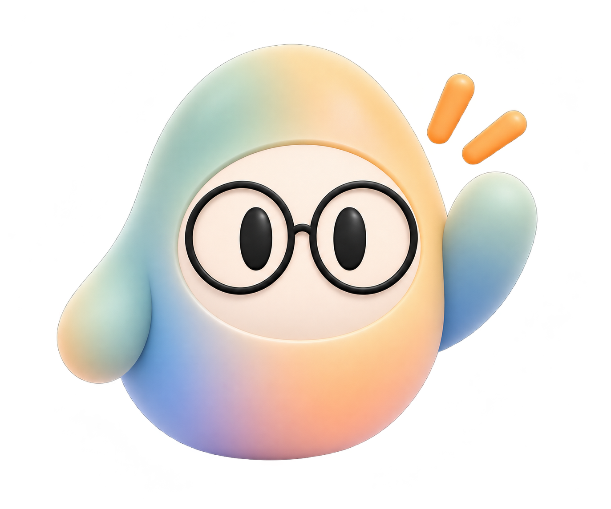

KALY · ÉTUDE DE MARCHÉ INTERNATIONAL
Votre expérience peut contribuer à faire évoluer KALY.
Nous souhaitons mieux comprendre les besoins liés au Food Noise et recueillir les attentes des personnes concernées ainsi que des professionnels de santé.
KALYComprendre ce qui se passe, sans se juger.
Quelques minutes6 à 8 min pour les utilisateurs · 5 à 7 min pour les professionnels
Sans compteLa participation ne nécessite pas de créer un compte KALY.
Deux languesQuestionnaires disponibles en français et en espagnol.
ÉTAPE 1
Quel profil vous correspond ?
Choisissez le questionnaire adapté à votre situation.
Cette étude porte sur les besoins, les attentes et l’utilité perçue de KALY. Elle ne constitue pas une étude clinique et ne mesure pas un impact thérapeutique.